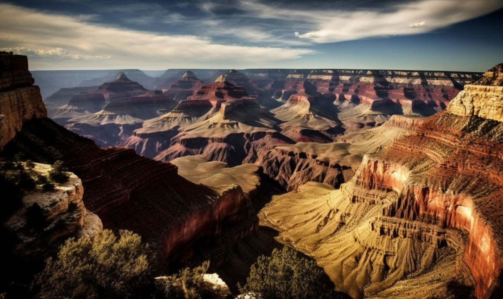
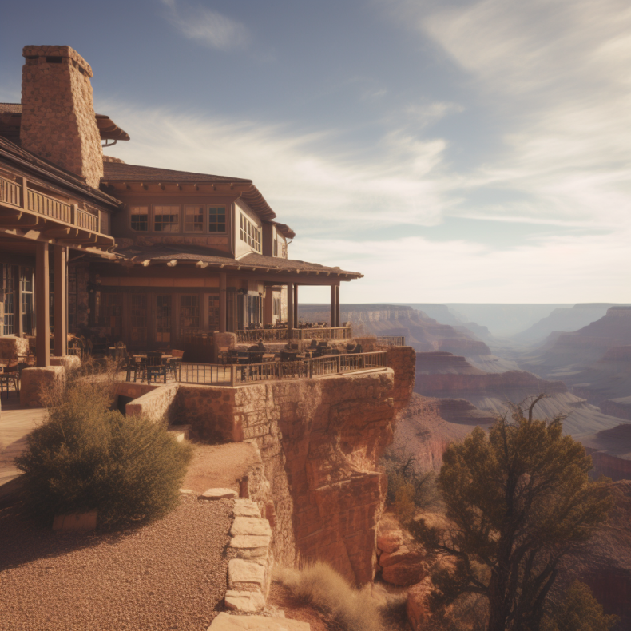
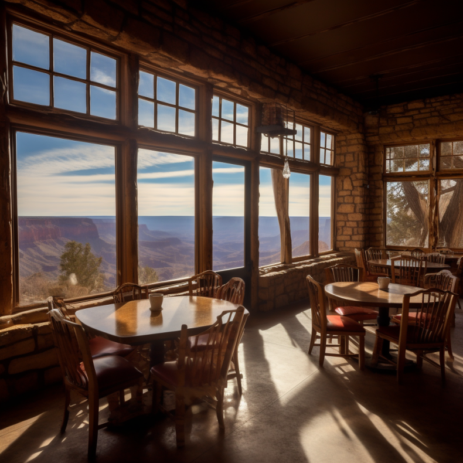
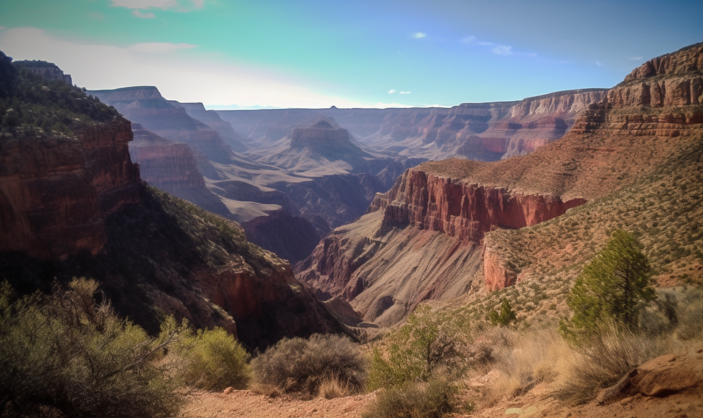

大峽谷_亞利桑那州

第一天：
抵達大峽谷地區，安頓入住附近的住宿設施。以下是幾個建議的住宿地點：
- 大峽谷南緣：這是最受歡迎的住宿區域，提供各種價格範圍的酒店和度假村。其中一個推薦的選擇是位於大峽谷村的酒店，讓您輕鬆接近主要景點和服務設施。
- 威廉斯（Williams）：這個小鎮位於大峽谷以西，提供了一個更寧靜的環境和更親民的住宿選擇。您可以選擇在這裡入住，然後乘坐火車或開車前往大峽谷。
第二天：
在大峽谷周圍移動可以使用多種交通方式：
- 公共交通：大峽谷國家公園提供免費的遊客巴士服務，可讓您輕鬆移動到主要景點和步道。詳細的巴士路線和時間表可以在遊客中心獲得。
- 自駕車：如果您有租車或自己開車，大峽谷地區有許多停車場和觀景點停車場供遊客使用。請注意遵守交通和停車規則。
- 步行和徒步旅行：大峽谷有許多美麗的步道和徒步旅行路線，讓您可以更近距離地欣賞自然美景。請確保穿著合適的鞋子和攜帶足夠的水和食物。

在大峽谷周邊有多種餐飲選擇，您可以品嚐當地的美食，大峽谷村和其他遊客服務設施周圍有多家餐廳和咖啡館，提供各種口味和風格的美食，包括美國經典料理、當地特色菜和國際美食。您可以根據個人喜好選擇就餐地點。

第三天：
在探索大峽谷期間，別忘了參觀一些主要景點。
大峽谷觀景點：包括馬斯默角（Mather Point）、太陽石（Sunset Point）和鷹點（Yaki Point）等，這些觀景點提供壯麗的峽谷景色，讓您欣賞大自然的奇觀。
峽谷地區有多條步道供遊客探索，其中一個經典的徑路是布萊頓巴拉巴（Bright Angel Trail），這條徑路可帶您深入峽谷內部，體驗獨特的地形和美景。大峽谷國家公園內也有遊客中心和博物館，提供關於峽谷地區地質、生態和文化歷史的資訊展示和展覽，讓您更深入了解這個地區的背景和價值。

更多關於美國大峽谷的介紹
大峽谷地區還具有豐富的文化和歷史：
- 印第安人文化：大峽谷地區是多個印第安部落的傳統領土，如哈瓦苏帕伊族（Havasupai Tribe）和納瓦霍族（Navajo Nation）。您可以了解他們的文化、藝術和手工藝品，並參觀他們的保留地或參加文化活動。
- 峽谷歷史：大峽谷地區有悠久的探險和開拓歷史，您可以參觀歷史遺址和博物館，了解探險家和開拓者對這片土地的影響和貢獻。
美國大峽谷是一個壯麗而令人驚嘆的旅遊目的地，這份旅遊行程規劃提供了住宿、交通、飲食、景點和文化方面的建議。請注意，以上只是一個大致的旅遊行程規劃建議，您可以根據自己的偏好和時間進行調整。以下是一些建議供您參考：
- 住宿：根據預算和需求，您可以選擇大峽谷南緣的酒店或度假村，以便更接近主要景點和服務設施。如果您喜歡更寧靜的環境，威廉斯是一個選擇。
-
交通：公共交通是一個方便的選擇，大峽谷國家公園提供免費遊客巴士服務，讓您可以輕鬆移動到各個景點。如果您有租車或自駕車，自由度會更高，但請確保遵守交通和停車規則。
-
飲食：在大峽谷村和周邊地區有多家餐廳和咖啡館可供選擇。您可以品嚐美國經典料理、當地特色菜和國際美食。同時，您也可以攜帶自己的食物和飲料，以便在行程中進行野餐或自助。
-
景點：除了主要觀景點外，還有其他不容錯過的景點，如聖玛莉亞瀑布（Havasu Falls）和南懸峭壁（South Rim Overlooks）。確保安排足夠的時間來欣賞大自然的美景和迷人的地形。
-
文化：大峽谷地區有豐富的印第安人文化和歷史。您可以參觀當地的部落保留地，了解他們的傳統、藝術和文化活動。同時，探索峽谷地區的歷史遺址和博物館，深入了解探險家和開拓者的故事。
貼心提醒:
在計劃旅程時，請記得預留足夠的時間來欣賞大峽谷的壯麗美景和探索周邊地區的文化和歷史。此外，為了確保安全，請注意遵守遊客中心的指示和建議，並遵守保護自然環境的規定。
希望您在美國大峽谷的旅行中度過愉快的時光！在您前往大峽谷之前，請確保查詢當地的天氣預報和相關旅遊資訊，以便做出相應的準備。
此外，以下是一些建議，以使您的旅行更加順利和愉快：
- 提前預訂：大峽谷是一個受歡迎的旅遊目的地，因此在您的行程日期接近之前，提前預訂住宿和參觀活動是明智之舉，以確保有合適的安排。
- 安全措施：在探索峽谷時，請遵循安全規定和建議。穿著合適的鞋子和舒適的服裝，攜帶足夠的水和防曬用品。如果您計劃進行徒步旅行或探險活動，請遵從指示，並在有專業指導的情況下進行。
-
天氣變化：大峽谷的天氣可能變化多端，請準備好應對不同的天氣條件。在夏季，白天可能很炎熱，而晚上則可能變涼，所以請攜帶一些輕便的外套或長袖衣物。
-
尊重自然：當您參觀大峽谷時，請尊重自然環境，不要隨意丟棄垃圾或破壞生態。遵守保護自然資源的原則，包括不野營在禁止區域，不捕捉或騷擾野生動物。
-
深度體驗：峽谷地區有豐富的自然和文化資源。參加導覽活動、夜間天文觀測或文化表演，可以讓您更深入地體驗這個特殊的地方。
請確保您在旅程中保持彈性，給自己足夠的時間來放鬆、探索和欣賞美國大峽谷的壯麗之美。祝您旅途愉快！